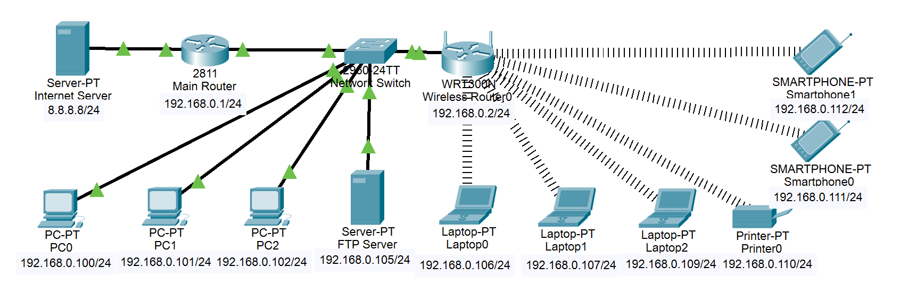

Overview
This guide explains how to set up a secure, efficient home network using Cisco Packet Tracer, covering key concepts, security measures, and best practices.
Network Topology


Figure 1: Complete network topology showing router, switch, and end devices
Network Requirements Analysis
| Requirement |
Implementation |
Purpose |
| Internet Connectivity |
WAN connection via ISP |
Provide internet access to all devices |
| Local Network Access |
LAN with DHCP |
Enable automatic device configuration |
| Wireless Access |
WPA2-secured WiFi |
Support mobile devices |
| File Sharing |
FTP Server |
Enable document sharing between devices |
| Network Security |
WPA2, IP segregation |
Protect network resources |
Prerequisites
Required Tools
- Cisco Packet Tracer version 8.2.2.0400
- Network planning documentation
- IP addressing scheme
Required Knowledge
- Basic networking concepts (IP addressing, subnetting)
- Basic understanding of network security
- Familiarity with command-line interfaces
Pre-implementation Checklist
| Task |
Status |
Notes |
| Verify Packet Tracer installation |
Required |
Version 8.2.2.0400 or higher |
| Prepare IP addressing scheme |
Required |
Use provided scheme or create custom |
| Gather device requirements |
Required |
List all devices to be connected |
[Previous Network Design section remains the same]
Configuration Steps
1. Basic Router Setup
Configuration Checklist
| Step |
Command/Action |
Verification |
| Access Router CLI |
Connect via console |
Router> prompt appears |
| Enter configuration mode |
configure terminal |
Router(config)# prompt |
| Configure WAN interface |
interface FastEthernet0/0 |
Check interface status |
| Configure LAN interface |
interface FastEthernet1/0 |
Check interface status |
Router Configuration Template
! Basic Router Configuration Template
enable
configure terminal
! WAN Interface Configuration
interface FastEthernet0/0
ip address 8.8.8.8 255.255.255.0
no shutdown
description WAN Interface
! LAN Interface Configuration
interface FastEthernet1/0
ip address 192.168.0.1 255.255.255.0
no shutdown
description LAN Interface
! Save Configuration
end
write memory
Common Configuration Issues
| Issue |
Possible Cause |
Solution |
| Interface down |
Missing 'no shutdown' |
Enter 'no shutdown' command |
| IP conflict |
Duplicate IP address |
Verify IP addressing scheme |
[Previous DHCP Configuration section with added validation steps]
2. DHCP Implementation
DHCP Configuration Template
! DHCP Configuration Template
ip dhcp pool BLOB
network 192.168.0.0 255.255.255.0
default-router 192.168.0.1
dns-server 8.8.8.8
! Exclude Static IP Addresses
ip dhcp excluded-address 192.168.0.1 192.168.0.99
! Verification Commands
show ip dhcp binding
show ip dhcp pool
show ip dhcp server statistics
DHCP Validation Checklist
| Test |
Expected Result |
Troubleshooting |
| Client receives IP |
IP in correct range |
Check DHCP configuration |
| Gateway reachable |
Ping successful |
Verify default gateway |
| DNS resolution |
Names resolve |
Check DNS server setting |
Network Maintenance
Regular Maintenance Tasks
| Task |
Frequency |
Command/Action |
| Check DHCP leases |
Weekly |
show ip dhcp binding |
| Verify security settings |
Monthly |
show running-config |
| Backup configuration |
Monthly |
copy running-config startup-config |